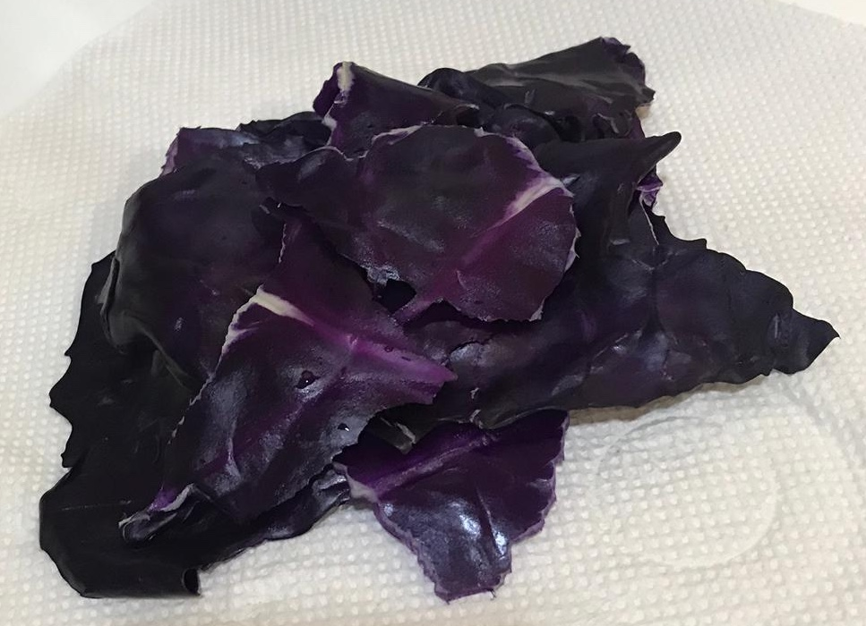
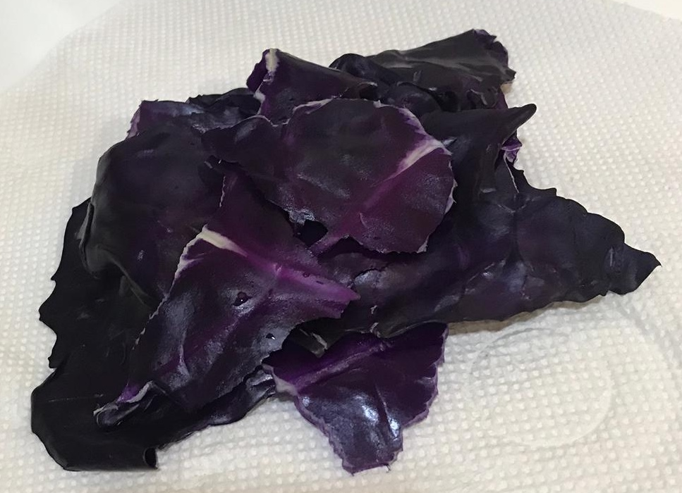
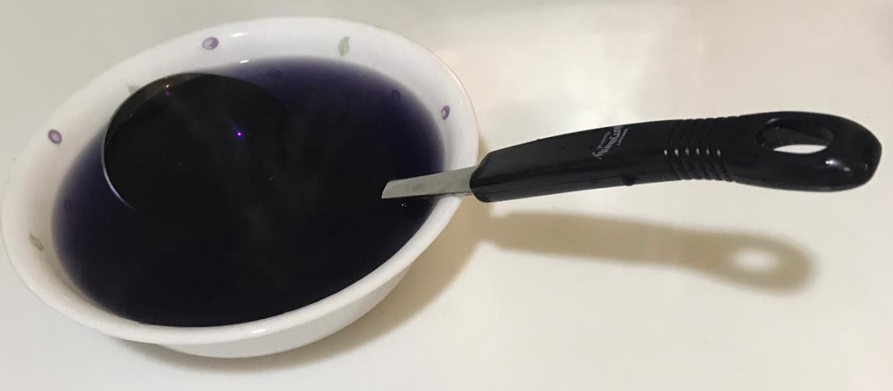
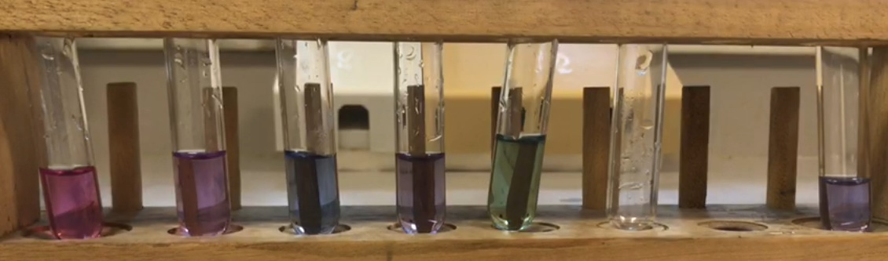

Although other fruits and vegetables can also be used, we chose to use the red cabbage as it has a deep purple colour which is clearer for observations. We used these apparatus as the preparation for the natural indicator was a simple and easy process.
The process:
Done!
Store in an airtight container, in a cool and dry place.
Independent variables: pH of substance
Dependent variables: Colour of substance after natural indicator is added
Constant variables: Amount of substance, type of natural indicator
The colour of the unknown substance in the test tube is purplish-blue, which is similar to the colour of the 4th test tube from the left, which has a pH level of 8.
The results!
(The test tubes from the left are of pH 4,6,7,8 and 10 respectively. The unknown substance is in the test tube on the right.)
The pH of our unknown substance is pH 8, and it is an alkali. It is safe for drinking based on research, which shows that substances with pH of between 6.5 to 8.5 are safe for human consumption. Substances with pH of less than 6.5 are too acidic for consumption, while substances with pH of more than 8.5 are too alkaline. Substances with extreme pH levels may cause negative effects to our health if consumed.
Written by: Eliana, Michelle, Sheryl, Qi Yuan
Last update: 4 May 2019